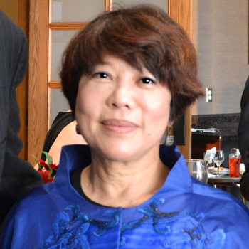

<div class="container">
    <div class="row">
        <div id="speaker-detail" class="col-lg-6 col-lg-offset-3">
            <div class="row">
                <button title="Close (Esc)" type="button" class="mfp-close">×</button>
                <div class="col-md-4 col-lg-4">
                    
                    <br />
                </div>
                <div class="col-md-8 col-lg-8">
                    <h2>Nancy T. Chang, Ph.D. <br>唐南珊博士</h2>
                    <h3>Ph.D., founder of Tanox</h3>
                    <p>Dr. Chang, best known as the Co-founder, President, CEO and Chairman of Tanox Inc. until it was bought by Genetech in 2006 with $919 million, is one of the most prominent and influential leaders in the global biotechnology industry. She was born in Taiwan in 1950, and after receiving her B.S. from National Tsing Hua University (Hsinchu, Taiwan) in 1972, she came to the United States to attend graduate school. On the plane ride to U.S., she read James Watson’s The Double Helix and was immediately drawn by the beauty of biology, which led to her decision to transfer from Brown University to Harvard University, where she earned her Ph.D. in biochemistry in 1982.</p>
                    <p>She grew interests in interferon during her Ph.D. study and therefore went to Roche Pharmaceutical Company in New York to work with Dr. Sidney Pestka as a postdoc after graduation. Later she joined Centocor (now Janssen Biotech Inc.) as a diagnostician. However, her passion and determination for research resulted in the birth of several pioneering new projects, including the first HIV/AIDS diagnostic assay, and eventually transformed Centocor into a therapeutic company. She then served as Director of Research at Centocor from 1982 to 1986 before she had to move with her family to Texas, where she became Associate Professor of Molecular Virology at Baylor College of Medicine from 1986 to 1991. She and Dr. Tse Wen Chang co-founded Tanox in 1986 with their family savings to develop treatments for allergic asthma. Besides the success of Xolair – the first biological therapy for allergic asthma, what’s worth mentioning is that Nancy’s group at Tanox also successfully brought TNX-355, now known as Ibalizumab, to Phase II trial before the acquisition by Genetech. Now Ibalizumab is one of the most promising new drugs to treat AIDS patients and has been put high hopes to eventually prevent HIV infection. </p>
                    <p>Nancy has received numerous nationwide as well as international acclaims for her outstanding achievements in biotechnology entrepreneurship. She now serves as board member for multiple academic institutes and biotech companies and is the President of Apex Enterprise Inc. She is also an angel investor and a philanthropist focusing on community health-education projects.
                    </p>
                </div>
            </div>
        </div>
    </div>
</div>